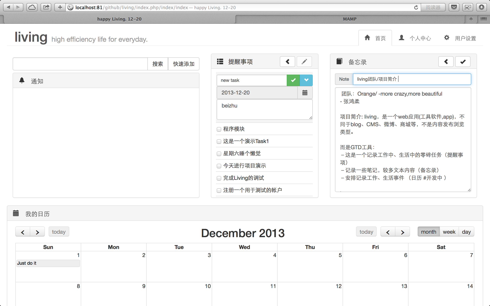
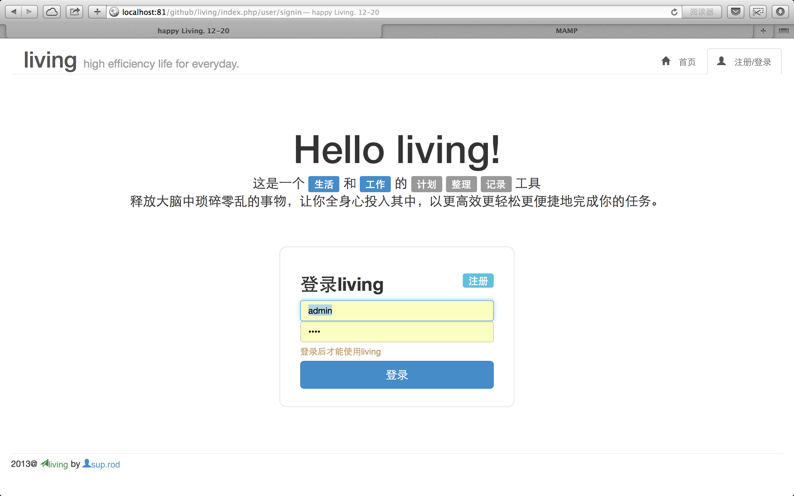
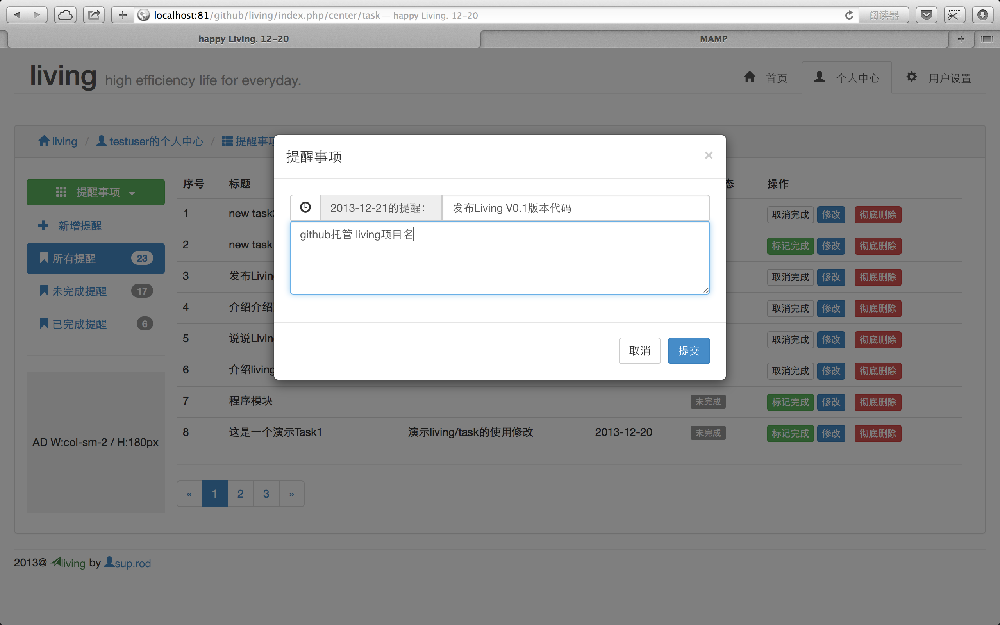
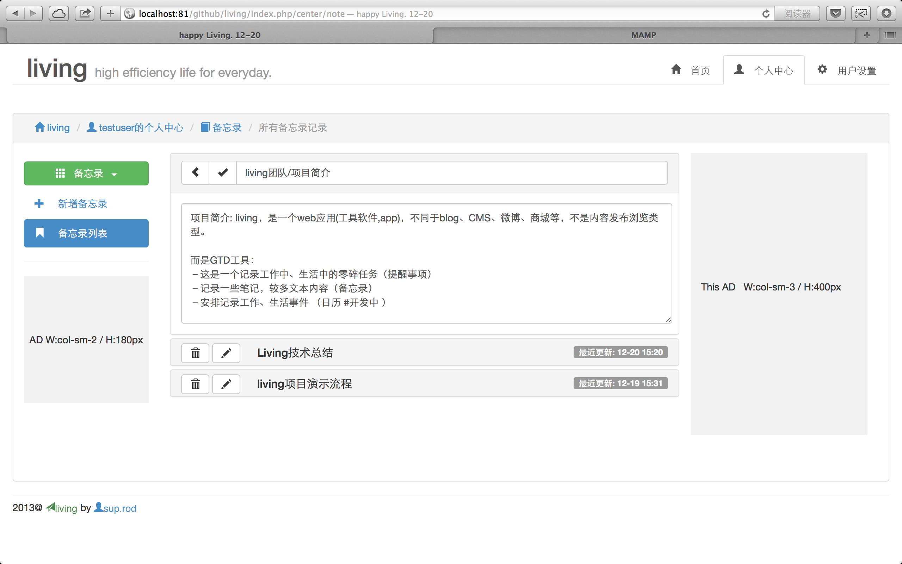
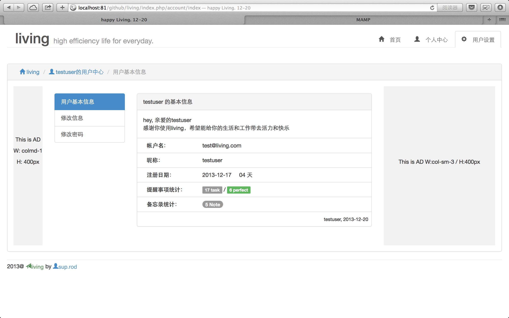

living项目
01 December 2013关于living项目
这是一个 生活 和 工作 的 计划 整理 记录 工具 释放大脑中琐碎零乱的事物，让你全身心投入其中，以更高效更轻松更便捷地完成你的任务。
其实呢，就是集合 提醒事项 备忘录 日历 的通用功能，基于在WEB平台的一个APP。
apple产品自带这三个小软件，简洁很实用。但我想，如果能合成一个软件会更方便.
要是同学朋友们，在安卓 桌面端都能使用，那就可好。
要是能恰当地加入简单的社交元素是最好不过的。
目前，这些正是我断断续续在努力的
欢迎各位加入一起开发，以自由开源为前提，折腾时间,技术成长，结交朋友为目的
项目代码托管在 GITHUB
项目主页: Home
SAE demo: Demo
living 这是效果图




